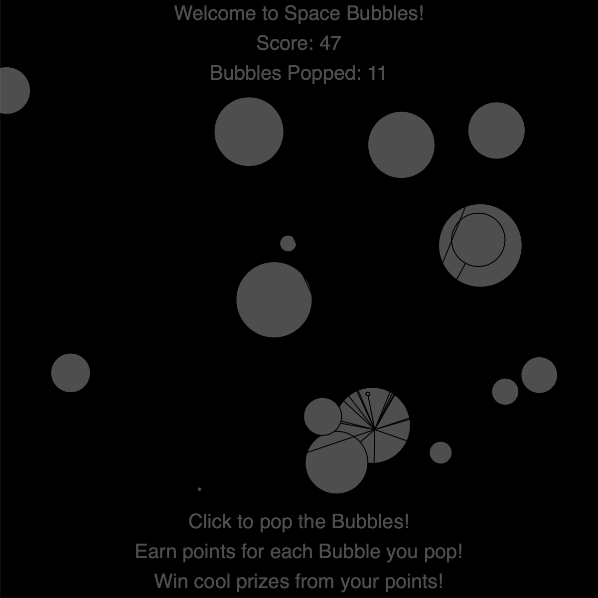

Once again using p5.js Processing programming, I made a game called... SPACE BUBBLES! Basically, you're in space, and you pop bubbles. Super creative and original amirite??? :DDDDDDDDDDDDDDD (lol no)
Honestly there is no "deeper meaning" to this. It's just a fun little game where you pop bubbles to earn points (and prizes!). The deeper meaning I guess is to represent the simpler things of life I guess. Sometimes simple is just enjoyable and fun, even if people don't see it as substantial.
All you have to do is click on the circles or hold the mouse down while passing over the circles to pop the bubbles. Most bubbles earn you one point but some earn you 5, 10, even 20 points. The brightness also changes for extra fun, look out for "blackouts" and don't let those stop you from popping bubbles. And did I mention you can win PRIZES for your points!!!! (Lol no that's a lie) Umm don't listen to the parentheses text! Original game with prizes you can win! :DDDDDDDDD